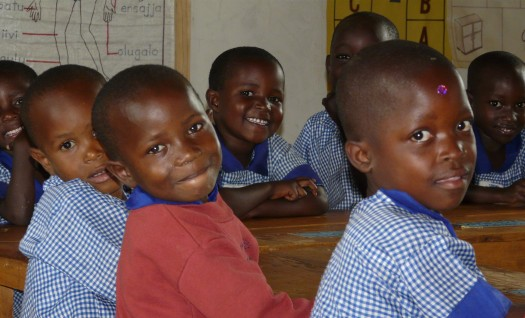
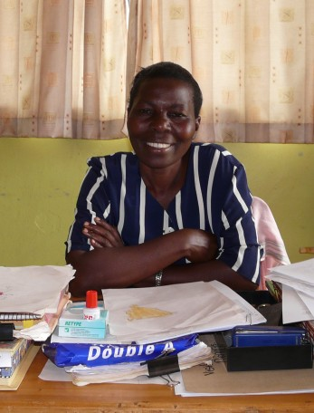
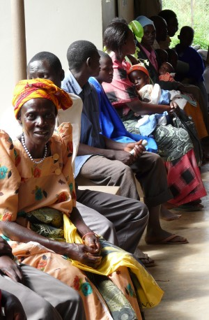
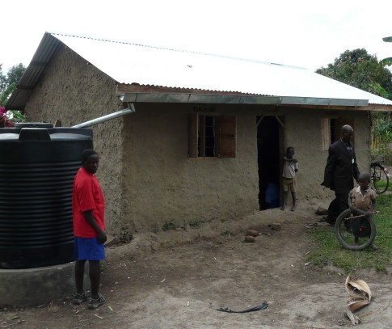
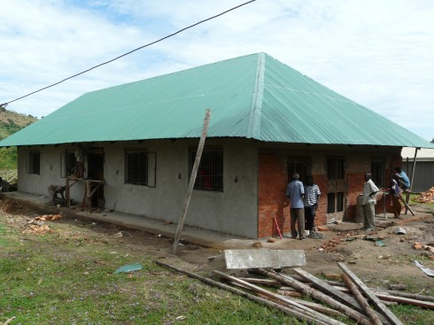
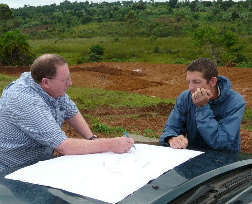
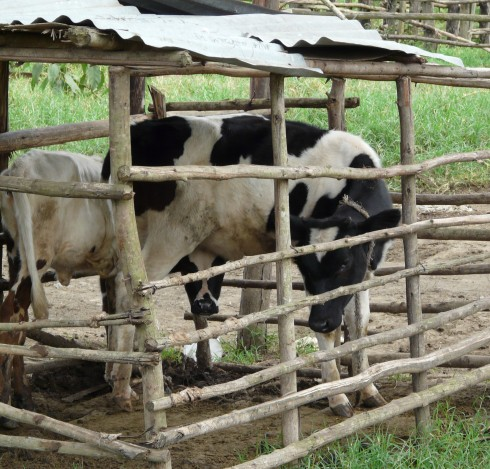
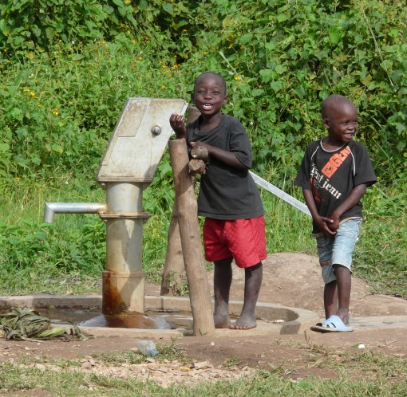

April 2009
Bram Moolenaar, treasurer of ICCF Holland, visited the Kibaale Children's
Centre in April 2009. This is his report.
Click on the images below for an enlargement.
You can find many more pictures on
Picasa.
Kibaale Organized
I have visited Kibaale so many times I stopped counting. And
still, every time I arrive it looks better. First thing I notice now is a
different color. Most of the buildings have been repaired and painted. It's
no surprise that repairs are required after a dozen years of rain, sun,
insects and wind. The walls are plastered, thus after fixing the holes and
fitting new window frames it needs to be painted. Brown is the dominant
color. This fits in well with the green of the grass and the trees.
And it's practical, it doesn't get mud-dirty after a shower.
When the project started we had little money, thus saving a few dollars was
more important than quality. Now that it's clear that the center is
successful and will be there for a long time quality has become more
important. A small investment can reduce maintenance costs. Experience
helps to know where to save money by spending a bit more.
It's clear that things are well organized these days. Not that
everything runs without a hitch, but there is always someone in place to take
care of issues. Last night the generator didn't run properly and stalled.
The solar system can generate power for a while, but since it's rainy season
the batteries are not filled up during the day. Within a few minutes a worker
comes over with his tools and a couple of hours later the problem has been
solved.
|
|
|

Children in the nursery class.
|

Rose takes care of the young children.
|
|
|
Staff
Walking around I see many familiar faces. The Ugandan leadership team is
unchanged. They have been around for up to 15 years now, these are people we
trust. Peter is the head of the school. He makes sure we have the right
teachers, are qualified to take exams and handles a lot of paperwork. Patrick
does what they call maintenance. It's actually much more than that, he also
oversees construction of new buildings, brings water to the kitchen, and
everything that doesn't fit in another department. Cephas is head of the KCF
office, they take care of the children. That includes special gifts, which
varies from buying shoes for a child that has grown out of his old ones to
building a house for a needy family.
Management is a big job now. In total there are 130 staff at the center.
Many moved to Kibaale from far away, thus we also provide housing for them.
And some bring their family, with the result that the staff quarters now looks
like a small village. The newest block was finished a month ago. It's at a
higher level and has a very nice view.
The Canadian volunteers who work at the center now are all new, I had not met
them before. Jeff, Shannon, Rachel, Sean and Jamie enthusiastically help the
Ugandans to do their work. Although Karl and Arleen are still around, they
moved to Masaka to oversee the building of the new Timothy center. More about
that below. Other times when I arrived I immediately got a list of things to
fix. Doors not closing, computers running slow, water pumps to be connected.
This time I was shown to a nice house (well, for Kibaale standards), freshly
painted and ready for use. I did have to fix the Window though, there was a
bit too much new paint there.
|
Clinic
In 2008 the new clinic building has been built and opened by Janet Museveni.
I went to visit it the first day and was very impressed. There are more than
twice as many rooms as we had
before, and they are all being used. In two of them patients are on drip.
This is used to give strength to those who are weakened by a disease, often
malaria. In the lab blood is taken from a man to be tested for HIV. When he
gets the results later, a counsellor is there to help him cope with the
consequences when the test turns out positive. About a dozen others are in
line for a lab test.
The staff has been increased to eleven. Mostly nurses, but also orderlies, a
receptionist, a pharmacist and a lab technician. The lab
has improved, they have more instruments to perform tests. Nevertheless, it
still looks primitive. A separate building is used for health education every
morning.
The disadvantage of having a well running clinic is that the costs to keep it
running have tripled in the past two years. More patients and also more
complicated cases. Being the best clinic in the area has its price!
Therefore we will start looking for sponsors to cover part of these costs and
keep the clinic running.
|
|
|

Patients waiting in the clinic.
|

A sponsor helped Daniels family building a new house. It also has a water tank.
It's still made from branches and mud, they can't afford bricks and cement.
|
|
|
Children
An important part of my visit is to meet children at home and
see how they are doing. When looking at all the nice
buildings in the center it's easy to forget that most families live in a mud
hut. And each family has their specific problems, that's why we help them.
The child I'm sponsoring myself, Geofry Kyomya, still lives in the same little
house. They are with three boys there, the parents have died and a grandma who
used to take care of them is now too weak to do this and moved elsewhere. The
oldest boy runs the family, there is no other option. They now have a
reasonable garden, which allows them to grow enough food to eat. And that's
it. For anything that requires money, such as fixing the roof, they need
outside help.
The other families I visit are in a similar situation. They are poor and
struggle with what they have. The only way out is to have one of the children
get a good education and find a job or start a business. The last day I met
Namate Rose. After being sponsored for many years she now works as a teacher.
She pays for the education of her sister and helped her mother renovate the
house. She shows that in the long run these people can indeed take care of
themselves. But unfortunately Rose is still an exception.
|
School
I noticed some small changes, but otherwise the school is doing well, as
before. The nursery has changed from two to three groups with the same total
number of children, so that each child gets more attention. The special needs
class has been split into a younger and older group. These deaf and
otherwise disabled children need a lot of attention and specific education.
This is not available anywhere else in the district. The secondary and
vocational school have improved a little, but no big changes here.
It's a great thing that this year most of the children have a sponsor. Not
only does this help the financial situation, it also means that the children
have a contact in the western world. They look forward to writing their
sponsor. Unfortunately they often do not hear anything back. I'll ask the
sponsors to write more often. Even a simple letter is a great thing for a
child to receive. A picture is treasured!
|
|
|

The new computer classroom is almost finished.
|

Ray and Jeff modify the plans for the Timothy Center.
|
|
|
Timothy center
One of the problems that we are struggling with is education for older
children. Once they finish secondary school at the project we need to find a
good further education for them. That has often been difficult. And the cost
is very high. Therefore a plan has been made to improve this and start our
own school.
I visited the location together with Ray Sutton, one of the founders and
visionaries for the Kibaale center. He showed me drawings, but then
immediately started to move things around while we walked through the grounds.
One of the issues was to put the buildings in such a way that we don't have to
cut down the wonderful trees. There is one old jack fruit tree with many huge
fruits, we definitely want to keep it.
This school is going to be a boarding school, which means that there need to
be dorms, a kitchen, dining area, and much more. And these are not little
children but adolescents who deserve more space. The plan is to build this
year and start with the first class in 2010. I'm looking forward to see this
take shape.
|
Farm
Part of the money for the project is coming from income generating projects.
Not much though. We have tried several things over the years. Recently this
was reduced to the three projects that are most successful: chickens,
cows and trees. I looked at about 1100 chicken (no, I didn't count them!).
Half of them full grown and producing eggs, the other half is growing up and
should
be ready for producing eggs in a few months. The eggs are being sold locally
and the costs are predictable. This works well.
Buying and selling cows has also turned out well. We buy them young. For a
while they produce milk and some produce a calve. Later they are sold again
and it turns out we make a nice profit. We use Frisian cows, not the local
breed. That's an experiment and should learn the farm keepers what works
best.
Tree growing is a long term project. We have planted pine trees on a part
of land that wasn't being used. It will take 12 to 15 years for them to grow.
Then we hope to sell them for about $250 each. That is a thousand times the
investment. Some will die though, we will discover only much later how it
works out. Big advantage, of course, is that it's a small investment and
doesn't take much effort.
|
|
|

Cows in the farm for generating income.
|

The new water pump in Kibaale produces good water.
|
|
|
Community services
We not only help specific families, but also attempt to improve the situation
for all people in the area. Water was a big problem three years ago, when there
was a drought. Even the river dried up then, which is the main water source
for people in Kibaale. To prevent this from happening again we have drilled a
borehole. It is located between Kibaale town and the river and it's producing
a lot of good water. That is not so obvious, many pumps in this area produce
water with too much iron, which means it's unusable. We are very happy that
this investment turned out well. Drilling is very expensive, but once the
pump is working it will require little maintenance to provide safe water for
many years.
The small loans program has been further expanded. Because of the financial
instability banks charge a very high interest rate. We charge a minimal
interest rate and accept loans at a higher risk. This is a great help for
womens groups and students who finished school and want to start a business.
When walking through town I notice that overall the situation has improved.
There are more shops and they are more specialized. In the past they would
just sell the essentials, such as rice, paraffin and salt. I now noticed a
shop that sells supplies for growing vegetables. That includes fertilizer,
spray equipment and insecticides. This is a good indication that crop
production is improving, which is very important in this rural area.
|
Conclusion
After my last visit I mentioned that there is steady progress. It is good to
see that this has continued. And everything looks more organized, which is a
sign that this will likely continue the coming years. But we should not
forget that there are still many orphans and families that cannot do without
our help. And the
busy clinic indicates that we still need to do more health education and help
improve hygiene.
Bram Moolenaar
many more pictures on Picasa
top
|

{kind=link}
{kind=link}
{kind=link}
{kind=link}
{kind=link}
{kind=link}
{kind=link}
{kind=link}